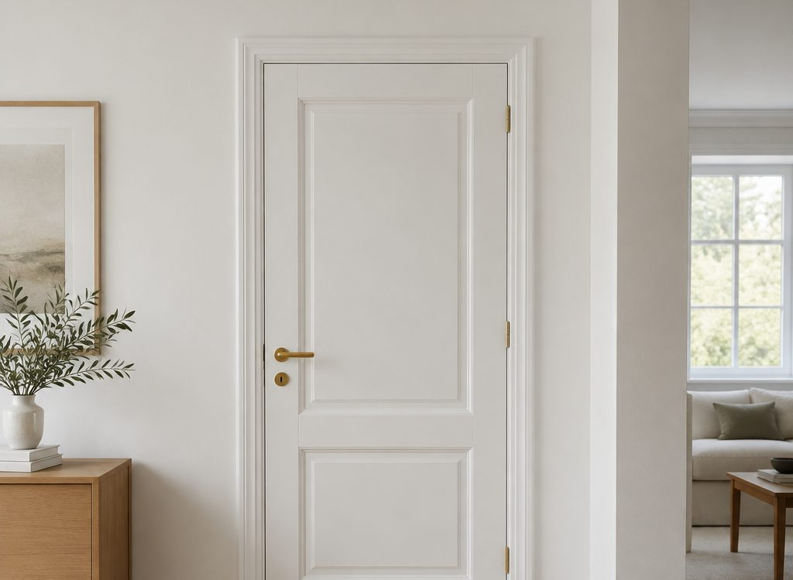
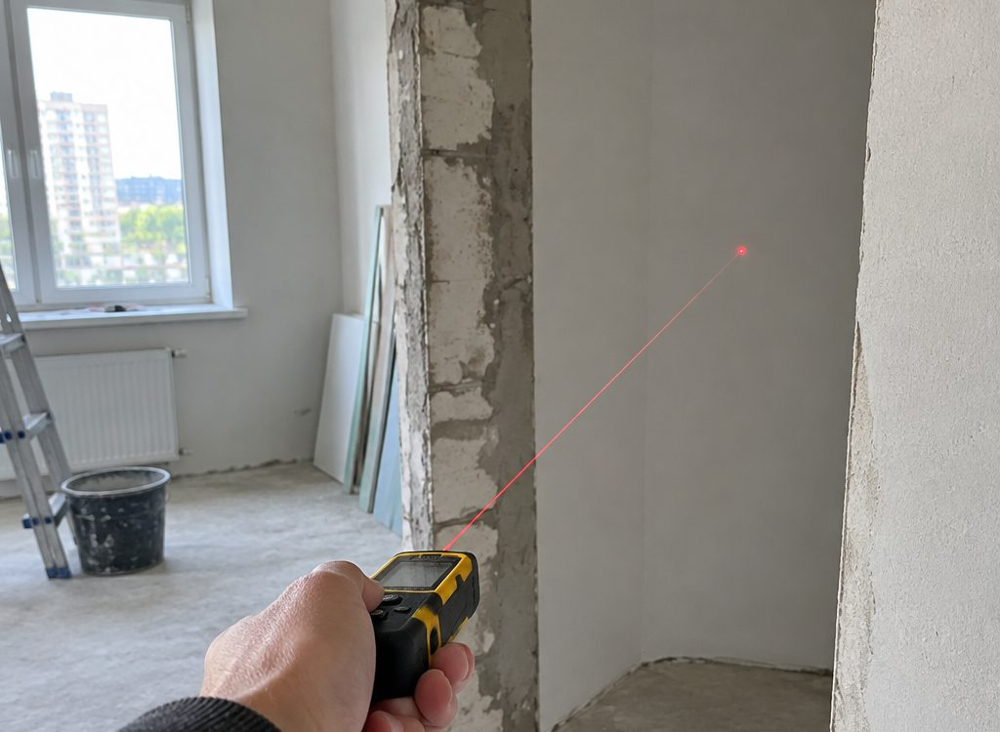

Дверь, которая
встаёт ровно
с первого раза
Межкомнатные двери, откосы, порталы и наличники. Замер и консультация до заказа, профессиональный инструмент, монтаж с пылесосом — после работы не нужно мыть квартиру.
Ведомость работ
Что делаем
Четыре вида работ, которые обычно идут вместе: дверь, откосы, наличники, а иногда вместо двери — портал.
Межкомнатные двери
Установка полотна и коробки: выставление по уровню, пазы под петли фрезером, зазоры 2–3 мм, проверка закрывания.
Откосы и наличники
Откосы внутри проёма и наличники на стыке: телескопические планки, аккуратные углы, без следов герметика.
Порталы
Проём без полотна: оформленные откосы и наличники, открытое пространство между комнатами.
Замер и расчёт
Разрез проёма по деталям и расчёт комплекта: размер полотна, доборы, метраж наличника, площадь откосов.
Как проходит монтаж
Семь этапов от замера до сдачи, с защитой помещения и пылесосом на инструменте.
Разрез проёма · интерактив
Из чего состоит проём
Нажмите на деталь: расскажу, зачем она нужна и что с ней чаще всего делают неправильно. Это тот язык, на котором мы разговариваем на замере.
Нажмите на деталь на схеме или на название: объясню, зачем она нужна и что с ней обычно делают неправильно.
Почему сюда
Три вещи,
которые видно потом
Дверь можно поставить быстро и плохо: она будет закрываться, но каждый день будет видно зазоры и пыль в углах.
Замер и консультация
Сначала считаем проём и объясняем, что нужно: полотно, доборы, наличник. Без сюрпризов на монтаже.
Профессиональный инструмент
Фрезер под петли, торцовка с прижимом, лазерный уровень. Ровный стык — это инструмент, а не «на глазок».
Монтаж с пылесосом
Пылесос подключён к инструменту, пол и мебель укрыты. После работы не нужно мыть квартиру.
Качество и гарантия
Проверяем, как полотно закрывается, и даём гарантию на монтаж. Срок фиксируем при сдаче.
Аккуратные узлы
Наличник входит в паз, углы запилены под 45°, зазоры 2–3 мм. Мелочи, которые видно каждый день.
Гродно и район
Работаем в городе и по району, выезд на замер по договорённости.

Монтаж
Чисто, потому что
пыль собираем сразу
Пыль появляется в момент пиления и фрезерования. Если подключить пылесос к инструменту, а не «пропылесосить в конце», её просто не будет на мебели и в шкафах.
Поэтому на объект приезжаем с плёнкой, укрывным материалом и промышленным пылесосом. Это часть работы, а не любезность.
Работы
Узлы крупно


Вопросы
Спрашивают
до замера
Можно ли ставить двери, если проём кривой
Можно, но сначала его надо привести в порядок: подштукатурить или закрыть откосом. Если перекос большой, честно скажу об этом на замере, а не после монтажа.
Сколько времени занимает установка одной двери
Обычно один проём — это несколько часов вместе с наличниками. Точнее скажу после замера: зависит от стены и от того, меняется ли полотно или ставится на старое место.
Правда ли, что после монтажа много пыли
Пыль появляется, когда штробят и пилят без отсоса. Мы подключаем пылесос к инструменту и накрываем пол: после работы остаётся протереть подоконник, а не мыть всю квартиру.
Что такое добор и нужен ли он мне
Добор — планка, которая добирает коробку до толщины стены. В панельном доме со стеной 120 мм он почти всегда нужен: без него наличник не достанет до стены.
Вы только ставите двери или продаёте их
Мы устанавливаем: двери, откосы, порталы и наличники. Помогаем с размерами и подсказываем, чего не хватает в комплекте до монтажа.
Есть ли гарантия
На монтаж даём гарантию, срок и условия фиксируем при сдаче работы. Если дверь перестала закрываться по нашей вине — приедем и поправим.
Работаете ли за городом
Гродно и район. Дальние адреса обсуждаем отдельно: зависит от расстояния и загрузки.
Можно ли установить портал вместо двери
Да, это отдельное направление. Портал — это проём без полотна с оформленными откосами и наличниками, его делают, когда хотят открытое пространство.

Фото демонстрационные. Свои снимки объектов поставлю вместо них.
Заявка
Вызвать на замер
Хватит адреса и количества проёмов. Если есть размеры — пришлите, посчитаем заранее.
Контакты